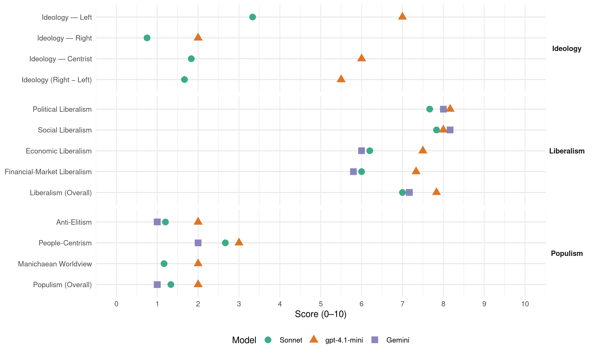

PS (Portugal, 2019)
manifesto_id 35311_201910
Get full text: This site shows derived annotations and short verbatim quotes only. The full manifesto text is © Manifesto Project / WZB — obtain it via manifesto-project.wzb.eu using the manifesto_id above.
Headline scores
| Dimension | Sonnet | gpt-4.1-mini | Gemini |
|---|---|---|---|
| Populism (Overall) | 1.3 | 2.0 | 1.0 |
| Anti-Elitism | 1.2 | 2.0 | 1.0 |
| People-Centrism | 2.7 | 3.0 | 2.0 |
| Manichaean Worldview | 1.2 | 2.0 | – |
| Ideology (Right − Left) | 1.7 | 5.5 | – |
| Liberalism (Overall) | 7.0 | 7.8 | 7.2 |
| Political Liberalism | 7.7 | 8.2 | 8.0 |
| Social Liberalism | 7.8 | 8.0 | 8.2 |
| Economic Liberalism | 6.2 | 7.5 | 6.0 |
| Financial-Market Liberalism | 6.0 | 7.3 | 5.8 |
Evidence per dimension
Economic Liberalism
Gemini · score 6.0 · verified · chunk 1
“investimento centrado na melhoria da competitividade”
I.I.2. Promoção do investimento centrado na melhoria da competitividade e da qualidade dos serviços públicos
Gemini · score 7.0 · verified · chunk 2
“benefícios para a economia portuguesa dos acordos comerciais”
Aproveitar plenamente os benefícios para a economia portuguesa dos acordos comerciais da União Europeia com países e regiões terceiras
Gemini · score 5.0 · mixed · chunk 3
“regulamentação incentivadora de boas práticas e impeditiva”
novas organizações interprofissionais; Estabelecer regulamentação incentivadora de boas práticas e impeditiva de práticas comerciais desleais.
Gemini · score 4.0 · verified · chunk 4
“reforçar os instrumentos de regulação do mercado”
dificuldades de acesso à habitação… é urgente reforçar os instrumentos de regulação do mercado, através da criação de um parque público
Gemini · score 7.0 · verified · chunk 5
“abertas à concorrência internacional”
empresas mais inovadoras e mais abertas à concorrência internacional. Estas foram as empresas
Gemini · score 5.0 · mixed · chunk 6
“cooperação entre empresas e outras organizações privadas”
Criar programas de cooperação entre empresas e outras organizações privadas e públicas com museus e monumentos
gpt-4.1-mini · score 8.0 · verified · chunk 1
“mais e melhor emprego como elemento central da nossa política económica”
Prometemos mais e melhor emprego como elemento central da nossa política económica, mas também da estratégia de ajustamento orçamental.
gpt-4.1-mini · score 8.0 · verified · chunk 2
“Promover a internacionalização da economia portuguesa, na tripla dimensão de fomento das exportações, fomento do investimento no exterior e atração de investimento direto estrangeiro”
I.IV.1.8. Apoiar a internacionalização da economia portuguesa, na tripla dimensão de fomento das exportações, fomento do investimento no exterior e atração de investimento direto estrangeiro: Implementar o Programa Internacionalizar 2030, assente nos eixos estratégicos definidos no Programa Internacionalizar,
gpt-4.1-mini · score 7.0 · verified · chunk 3
“Promover a concentração da oferta e o reforço da posição dos produtores”
…Promover a concentração da oferta e o reforço da posição dos produtores na cadeia de valor, incentivando as organizações da produção a desempenhar um papel consequente na sustentabilidade das unidades produtivas dos seus associados…
gpt-4.1-mini · score 7.0 · verified · chunk 4
“promover a criação de mais e melhor emprego para todos, eliminar a pobreza no trabalho”
Promover a criação de mais e melhor emprego para todos, eliminar a pobreza no trabalho, promover o aumento da retribuição mínima mensal garantida e combater a instabilidade e a insegurança laboral são eixos fundamentais da nossa agenda.
gpt-4.1-mini · score 8.0 · verified · chunk 5
“promover a criação de relações de trabalho mais justas”
O crescimento da produtividade deve beneficiar da qualificação da gestão das empresas que, por sua vez, favorece a criação de melhor emprego e de relações de trabalho mais justas. Na verdade, construir um Portugal moderno, inovador e na linha da frente da sociedade da informação significa, sobretudo, pensar nos cidadãos e capacitá-los. Tal implica um forte investimento na formação, na educação e na ciência. O nosso caminho é por isso claro: a competitividade de Portugal passa por apostar nos nossos recursos e no valor acrescentado do nosso trabalho, qualificando mais os portugueses. Este investimento deve ser realizado de forma inclusiva, estimulando o acesso ao ensino e à aprendizagem ao longo da vida e criando condições de acesso, facilitado e gratuito, à Internet para toda a população.
gpt-4.1-mini · score 7.0 · verified · chunk 6
“Aumentar, de forma progressiva, a despesa do Estado em Cultura, com o objetivo de, no horizonte da legislatura, atingir 2% da despesa discricionária prevista no Orçamento do Estado”
…Implementar a Conta Satélite da Cultura; Aumentar, de forma progressiva, a despesa do Estado em Cultura, com o objetivo de, no horizonte da legislatura, atingir 2% da despesa discricionária prevista no Orçamento do Estado. II.IV.4.2. Garantir o acesso dos cidadãos à comunicação social A proliferação de novas formas de consumo de conteúdos comunicacionais torna ainda mais relevante o papel dos órgãos de comunicação social na proteção de valores socialmente partilhados e na prestação de informação rigorosa…
Sonnet · score 6.0 · verified · chunk 1
“redução da tributação sobre as famílias e as empresas”
com a criação de mais e melhor emprego, e a redução da tributação sobre as famílias e as empresas. Além disso, foi possível conquistar
Sonnet · score 6.0 · verified · chunk 2
“internacionalização da nossa economia”
na promoção da internacionalização da nossa economia e da nossa língua e cultura
Sonnet · score 6.0 · verified · chunk 3
“agricultura moderna, competitiva e inserida nos mercados”
contributo de uma agricultura moderna, competitiva e inserida nos mercados, capaz de assegurar uma alimentação saudável
Sonnet · score 5.0 · mixed · chunk 4
“regulação do mercado de trabalho”
a regulação do mercado de trabalho tem nos mecanismos de representação, em particular no associativismo sindical e empresarial, uma garantia de legitimação
Sonnet · score 7.0 · verified · chunk 5
“uma economia aberta, em que o Estado apoia o processo de internacionalização”
uma economia aberta, em que o Estado apoia o processo de internacionalização das empresas e a modernização da sua estrutura produtiva. As metas que propomos são claras: alcançar um volume de exportações equivalente a 50% do PIB
Sonnet · score 6.0 · verified · chunk 6
“competitividade da economia do país”
ao mesmo tempo capaz de afirmar o património histórico-cultural português, a criatividade dos nossos artistas e a competitividade da economia do país
Financial-Market Liberalism
Gemini · score 7.0 · verified · chunk 1
“estabilização e robustecimento do sistema financeiro”
a continuação da estabilização e robustecimento do sistema financeiro continuará a ser um tema essencial
Gemini · score 7.0 · verified · chunk 2
“promover a emissão de obrigações verdes”
produtos financeiros verdes atrativos; Promover a emissão de obrigações verdes (green bonds); Fomentar o desenvolvimento de plataformas
Gemini · score 6.0 · verified · chunk 3
“canalizar investimento privado e assegurar a gestão”
Fundos de Investimento Florestais que constituam uma forma de canalizar investimento privado e assegurar a gestão florestal sustentada nas regiões
Gemini · score 3.0 · verified · chunk 4
“Avaliar o quadro regulatório das comissões bancárias”
compras online, através do fortalecimento da cooperação… Avaliar o quadro regulatório das comissões bancárias, assegurando os princípios da transparência ao consumidor
Gemini · score 6.0 · verified · chunk 5
“acesso das PME ao mercado de capitais”
nomeadamente facilitando o acesso das PME ao mercado de capitais; No que se refere
gpt-4.1-mini · score 8.0 · verified · chunk 1
“continuação da estabilização e robustecimento do sistema financeiro”
Depois da ação determinada ao longo da presente legislatura, a continuação da estabilização e robustecimento do sistema financeiro continuará a ser um tema essencial para o financiamento da economia e para o crescimento sustentável.
gpt-4.1-mini · score 7.0 · verified · chunk 2
“Reforçar a aposta no relacionamento com as instituições financeiras multilaterais, de maneira a facilitar a participação em mecanismos europeus e internacionais de financiamento do desenvolvimento”
Alargar progressivamente a geografia da nossa cooperação, designadamente em direção à África não lusófona e à América Latina. I.IV.1.6. Adaptar a organização diplomática e consular às novas realidades da emigração portuguesa e aproveitar o enorme potencial da dimensão, dispersão, enraizamento e vinculação a Portugal das comunidades residentes no estrangeiro: Reforçar a aposta no relacionamento com as instituições financeiras multilaterais, de maneira a facilitar a participação em mecanismos europeus e internacionais de financiamento do desenvolvimento; Sublinhar a prioridade da educação e formação,
gpt-4.1-mini · score 7.0 · verified · chunk 5
“Consolidar a atuação da Instituição Financeira de Desenvolvimento”
O PS irá: Otimizar os recursos nacionais para o financiamento da inovação empresarial, direcionando recursos e promovendo a coerência da oferta das linhas de apoio existentes (linhas de crédito, garantias mútuas, capital de risco); Consolidar a atuação da Instituição Financeira de Desenvolvimento (IFD), nomeadamente enquanto national promotional bank (NPB), que prosseguirá o esforço de potenciação de recursos financeiros nacionais com apoios comunitários e parcerias com entidades multilaterais, nomeadamente o Banco Europeu de Investimento; Continuar a apostar na diversificação das fontes de financiamento das empresas e na redução da sua dependência do financiamento do sistema bancário, com estruturas de capital mais equilibradas, nomeadamente facilitando o acesso das PME ao mercado de capitais; No que se refere ao sistema fiscal português, que de acordo com o Tax survey da UE, se posiciona como o segundo mais favorável ao investimento, se posiciona como o segundo mais favorável ao investimento, continuar a trabalhar nas seguintes dimensões: Incentivar o investimento privado em I&D empresarial com a revisão do instrumento de Incentivos Fiscais ao I&D empresarial (SIFIDE); Promover uma fiscalidade que incentive o investimento na modernização produtiva e na I&D, prosseguindo a trajetória de melhoria do quadro de apoio ao investimento e a capitalização das empresas, em detrimento da redução genérica do IRC, cuja correlação com o crescimento do investimento não esta demonstrada; Melhorar o regime do IRC para as empresas que reinvistam os seus lucros através de um aumento em 20% do limite máximo de lucros que podem ser objeto de reinvestimento (de 10M€ para 12M€), assim aumentando a dedução à coleta de IRC para estas empresas; Criar um quadro fiscal incentivador da canalização de poupança para o investimento produtivo e da abertura do capital das empresas; Criar um quadro fiscal favorável aos ganhos de escala das empresas e à sucessão empresarial.
Sonnet · score 7.0 · verified · chunk 1
“proposta de reforma da supervisão financeira”
A proposta de reforma da supervisão financeira é um primeiro passo para assegurar uma melhor regulação. O desenvolvimento e implementação desta reforma
Sonnet · score 6.0 · verified · chunk 2
“Completar a União Económica e Monetária, concluindo a União Bancária”
Completar a União Económica e Monetária, concluindo a União Bancária e fazendo do Instrumento Orçamental para a Convergência
Sonnet · score 6.0 · verified · chunk 3
“Fundos de Investimento Florestais”
Promover criação de Fundos de Investimento Florestais que constituam uma forma de canalizar investimento privado
Sonnet · score 5.0 · verified · chunk 4
“comissões bancárias, assegurando os princípios da transparência”
Avaliar o quadro regulatório das comissões bancárias, assegurando os princípios da transparência ao consumidor e da proporcionalidade
Sonnet · score 6.0 · verified · chunk 5
“Avaliar o quadro regulatório das comissões bancárias”
Avaliar o quadro regulatório das comissões bancárias, assegurando os princípios da transparência ao consumidor e da proporcionalidade face aos serviços efetivamente prestados
Political Liberalism
Gemini · score 9.0 · verified · chunk 1
“Estado de Direito Democrático”
que podem pôr em causa o Estado de Direito Democrático.
Gemini · score 8.0 · verified · chunk 2
“princípio da separação de poderes e a independência”
Volvidos 45 anos de democracia em Portugal, o princípio da separação de poderes e a independência do poder judicial são valores basilares
Gemini · score 8.0 · verified · chunk 3
“exercício de direitos constitucionais como a greve”
mecanismos de transparência e de independência no financiamento associativo, em particular no exercício de direitos constitucionais como a greve; Estimular a abertura
Gemini · score 8.0 · verified · chunk 4
“direito de solo no regime da nacionalidade”
devem ainda ser aprofundadas as manifestações do princípio do direito de solo no regime da nacionalidade. Neste, como noutros campos, a promoção da
Gemini · score 7.0 · verified · chunk 5
“fiscalização política e democrática”
Garantir uma efetiva fiscalização política e democrática sobre a utilização da Inteligência Artificial
Gemini · score 8.0 · verified · chunk 6
“fiscalização política e democrática sobre a utilização”
Garantir uma efetiva fiscalização política e democrática sobre a utilização da Inteligência Artificial pelos poderes do Estado
gpt-4.1-mini · score 9.0 · verified · chunk 1
“Promover a literacia democrática e a cidadania”
I.III. Melhorar a qualidade da democracia O PS sempre liderou as reformas do sistema político, designadamente com a apresentação de candidaturas independentes, a introdução da paridade nas listas para as eleições autárquicas, legislativas e europeias e a limitação de mandatos autárquicos, a par de medidas de combate à corrupção e pela transparência.
gpt-4.1-mini · score 9.0 · verified · chunk 2
“princípio da separação de poderes e a independência do poder judicial são valores basilares do Estado de Direito Democrático”
Volvidos 45 anos de democracia em Portugal, o princípio da separação de poderes e a independência do poder judicial são valores basilares do Estado de Direito Democrático que se encontram absolutamente consolidados e constituem parte do “adquirido democrático”. Assim, importa agora reforçar a dimensão da Justiça enquanto serviço público, que cabe ao Estado desenvolver.
gpt-4.1-mini · score 7.0 · verified · chunk 3
“PS será líder na contestação a movimentos xenófobos”
…Em todos os momentos, em Portugal e no resto do mundo, o PS será líder na contestação a movimentos xenófobos ou que procurem uma atribuição de culpas a refugiados, imigrantes ou pessoas em função da sua etnia ou religião…
gpt-4.1-mini · score 8.0 · verified · chunk 4
“direito à igualdade e à não discriminação está não apenas amplamente consagrado no plano constitucional e legal”
O direito à igualdade e à não discriminação está não apenas amplamente consagrado no plano constitucional e legal, como tem vindo a ser nas últimas décadas objeto de uma crescente densificação e de avanços civilizacionais notáveis.
gpt-4.1-mini · score 8.0 · verified · chunk 5
“garantir os direitos dos consumidores”
II.III.4.1. Proteger os direitos dos consumidores Apesar dos progressos feitos nos últimos anos, a situação dos consumidores perante os prestadores de serviços e de bens, numa sociedade de consumo cada vez mais massificada e acelerada, continua a carecer de atenção adicional. O objetivo deve ser duplo: o de prevenir o conflito, impondo regras justas e que equilibrem as condições contratuais de consumidores e prestadores; verificado um litígio, deve ser encontrada uma forma de o resolver de forma célere e eficaz, oferecendo soluções economicamente satisfatórias para o consumidor. Para isso, o PS irá: Promover iniciativas de informação, sensibilização e capacitação, dirigidas sobretudo aos consumidores mais vulneráveis e com especial enfoque em domínios que carecem de maior divulgação, como os direitos dos passageiros e o comércio eletrónico; Limitar efetivamente o contacto de teor comercial com consumidores à sua expressa declaração de disponibilidade nesse sentido, independentemente da relação pré-existente com o fornecedor de bens ou serviços em causa; Prevenir e punir as técnicas agressivas e inapropriadas de vendas e publicidade, potencialmente encorajadoras do sobreendividamento dos consumidores, sobretudo no que respeita aos consumidores mais vulneráveis; Garantir que a venda e revenda telemática de bilhetes para espetáculos, títulos de transporte e outros bens ou serviços acontece de forma não lesiva para o interesse dos consumidores e no estrito cumprimento da lei, respeitando obrigações de transparência em relação ao montante final a ser pago pelo consumidor; Avaliar o quadro regulatório das comissões bancárias, assegurando os princípios da transparência ao consumidor e da proporcionalidade face aos serviços efetivamente prestados; Garantir a inexistência de comissões associadas ao levantamento de dinheiro e outros serviços disponibilizados nas «Caixas Multibanco»; Transmitir aos consumidores o maior conjunto de informação possível sobre a composição dos produtos agroalimentares, a sua origem, bem como o impacto ambiental da sua produção, estimulando a adoção de hábitos de vida saudáveis; Adotar instrumentos que permitam ao consumidor obter informação e compará-la, no que à vida útil dos produtos diz respeito, assim como promover a atualização e a reparação de produtos, numa lógica promotora da sustentabilidade ambiental e limitadora da obsolescência programada; Assegurar maior proteção nas compras online, através do fortalecimento da cooperação nos âmbitos europeu e internacional, para reforço dos direitos dos consumidores; Efetivar o Livro de Reclamações como instrumento crucial da política pública de defesa do consumidor, assegurando que o mesmo constitui uma base para a indemnização e não apenas para aplicação de eventual coima; Lançar uma plataforma eletrónica que permita a resolução de contratos de telecomunicações, dispensando os consumidores da interação física com os operadores do setor; Fomentar o alargamento da rede de centros de arbitragem de consumo, bem como o seu funcionamento online, de modo a cobrir de modo mais eficaz as necessidades dos consumidores, e promovendo a sua interação em rede com «Centros de Informação Autárquicos ao Consumidor» e os demais instrumentos do sistema de defesa do consumidor, designadamente o Livro de Reclamações; Dar visibilidade adicional aos prestadores de bens e serviços que incluem cláusulas contratuais declaradas judicialmente como abusivas nos seus contratos de adesão; Permitir que as entidades reguladoras determinem, mediante injunção, a restauração da situação anterior à prática da infração; Potenciar o Comércio com História, quer através do apoio a projetos de investimento promovidos por empresas em estabelecimentos reconhecidos como de interesse histórico, cultural ou social local, quer através de outras medidas promocionais, designadamente através da plataforma Comércio com História; Reforçar a articulação entre a produção nacional e o comércio de proximidade, através da dinamização das redes logísticas e de abastecimento; Lançar a plataforma Comércio no Mundo, que reúna, localize e confira projeção e notoriedade a marcas, estabelecimentos comerciais ou de serviços portugueses localizados noutros países, e onde seja possível aceder a produtos nacionais; Fomentar iniciativas de dinamização e valorização da oferta nacional, aproximando os consumidores das marcas e dos produtos portugueses.
gpt-4.1-mini · score 8.0 · verified · chunk 6
“Garantir uma efetiva fiscalização política e democrática sobre a utilização da Inteligência Artificial pelos poderes do Estado”
…para garantir a privacidade e o bom nome dos cidadãos e das empresas; Garantir uma efetiva fiscalização política e democrática sobre a utilização da Inteligência Artificial pelos poderes do Estado, com vista à proteção dos direitos fundamentais dos cidadãos e evitar discriminações; Criar um portal com toda a informação referente a direitos digitais; Criar a figura da residência digital, permitindo aos requerentes que lhes sejam reconhecidos direitos independentemente da sua localização física;…
Sonnet · score 8.0 · verified · chunk 1
“melhorando a qualidade da democracia, promovendo a participação dos cidadãos”
Prosseguir este caminho, melhorando a qualidade da democracia, promovendo a participação dos cidadãos, renovando e qualificando a classe política
Sonnet · score 8.0 · verified · chunk 2
“separação de poderes e a independência do poder judicial”
o princípio da separação de poderes e a independência do poder judicial são valores basilares do Estado de Direito Democrático
Sonnet · score 7.0 · verified · chunk 3
“direitos fundamentais de acesso à Justiça”
com ancoragem na negociação coletiva e com garantia dos direitos fundamentais de acesso à Justiça
Sonnet · score 7.0 · verified · chunk 4
“aspeto fundacional da democracia portuguesa”
um dos pilares fundamentais do desenvolvimento das comunidades e um aspeto fundacional da democracia portuguesa
Sonnet · score 8.0 · verified · chunk 5
“fiscalização política e democrática sobre a utilização da Inteligência Artificial”
Garantir uma efetiva fiscalização política e democrática sobre a utilização da Inteligência Artificial pelos poderes do Estado, com vista à proteção dos direitos fundamentais dos cidadãos e evitar discriminações
Sonnet · score 8.0 · verified · chunk 6
“fiscalização política e democrática”
Garantir uma efetiva fiscalização política e democrática sobre a utilização da Inteligência Artificial pelos poderes do Estado, com vista à proteção dos direitos fundamentais
Liberalism (Overall)
Gemini · score 8.0 · verified · chunk 1
“Estado de Direito Democrático”
que podem pôr em causa o Estado de Direito Democrático.
Gemini · score 8.0 · verified · chunk 2
“princípio da separação de poderes e a independência”
Volvidos 45 anos de democracia em Portugal, o princípio da separação de poderes e a independência do poder judicial são valores basilares
Gemini · score 7.0 · verified · chunk 3
“exercício de direitos constitucionais como a greve”
mecanismos de transparência e de independência no financiamento associativo, em particular no exercício de direitos constitucionais como a greve; Estimular a abertura
Gemini · score 6.0 · verified · chunk 4
“combate determinado a todas as formas de discriminação”
redução das desigualdades socioeconómicas e prosseguir o combate determinado a todas as formas de discriminação que sobrevivem como comportamentos disseminados, apesar
Gemini · score 7.0 · verified · chunk 5
“abertas à concorrência internacional”
empresas mais inovadoras e mais abertas à concorrência internacional. Estas foram as empresas
Gemini · score 7.0 · verified · chunk 6
“fiscalização política e democrática sobre a utilização”
Garantir uma efetiva fiscalização política e democrática sobre a utilização da Inteligência Artificial pelos poderes do Estado
gpt-4.1-mini · score 8.0 · verified · chunk 1
“Prometemos mais e melhor emprego como elemento central da nossa política económica”
Prometemos mais e melhor emprego como elemento central da nossa política económica, mas também da estratégia de ajustamento orçamental.
gpt-4.1-mini · score 8.0 · verified · chunk 2
“princípio da separação de poderes e a independência do poder judicial são valores basilares do Estado de Direito Democrático”
Volvidos 45 anos de democracia em Portugal, o princípio da separação de poderes e a independência do poder judicial são valores basilares do Estado de Direito Democrático que se encontram absolutamente consolidados e constituem parte do “adquirido democrático”. Assim, importa agora reforçar a dimensão da Justiça enquanto serviço público, que cabe ao Estado desenvolver.
gpt-4.1-mini · score 7.0 · verified · chunk 3
“PS será líder na contestação a movimentos xenófobos”
…Em todos os momentos, em Portugal e no resto do mundo, o PS será líder na contestação a movimentos xenófobos ou que procurem uma atribuição de culpas a refugiados, imigrantes ou pessoas em função da sua etnia ou religião…
gpt-4.1-mini · score 8.0 · verified · chunk 4
“direito à igualdade e à não discriminação está não apenas amplamente consagrado no plano constitucional e legal”
O direito à igualdade e à não discriminação está não apenas amplamente consagrado no plano constitucional e legal, como tem vindo a ser nas últimas décadas objeto de uma crescente densificação e de avanços civilizacionais notáveis.
gpt-4.1-mini · score 8.0 · verified · chunk 5
“promover a criação de relações de trabalho mais justas”
O crescimento da produtividade deve beneficiar da qualação da gestão das empresas que, por sua vez, favorece a criação de melhor emprego e de relações de trabalho mais justas. Na verdade, construir um Portugal moderno, inovador e na linha da frente da sociedade da informação significa, sobretudo, pensar nos cidadãos e capacitá-los. Tal implica um forte investimento na formação, na educação e na ciência. O nosso caminho é por isso claro: a competitividade de Portugal passa por apostar nos nossos recursos e no valor acrescentado do nosso trabalho, qualificando mais os portugueses. Este investimento deve ser realizado de forma inclusiva, estimulando o acesso ao ensino e à aprendizagem ao longo da vida e criando condições de acesso, facilitado e gratuito, à Internet para toda a população.
gpt-4.1-mini · score 8.0 · verified · chunk 6
“Garantir uma efetiva fiscalização política e democrática sobre a utilização da Inteligência Artificial pelos poderes do Estado”
…para garantir a privacidade e o bom nome dos cidadãos e das empresas; Garantir uma efetiva fiscalização política e democrática sobre a utilização da Inteligência Artificial pelos poderes do Estado, com vista à proteção dos direitos fundamentais dos cidadãos e evitar discriminações; Criar um portal com toda a informação referente a direitos digitais; Criar a figura da residência digital, permitindo aos requerentes que lhes sejam reconhecidos direitos independentemente da sua localização física;…
Sonnet · score 7.0 · verified · chunk 1
“melhorando a qualidade da democracia, promovendo a participação dos cidadãos”
Prosseguir este caminho, melhorando a qualidade da democracia, promovendo a participação dos cidadãos, renovando e qualificando a classe política
Sonnet · score 7.0 · verified · chunk 2
“separação de poderes e a independência do poder judicial”
o princípio da separação de poderes e a independência do poder judicial são valores basilares do Estado de Direito Democrático
Sonnet · score 7.0 · verified · chunk 3
“direito à habitação é um direito fundamental”
O direito à habitação é um direito fundamental indispensável para a concretização de um verdadeiro Estado Social
Sonnet · score 7.0 · verified · chunk 4
“plena igualdade de direitos”
garantia de uma plena igualdade de direitos, com firme repúdio de todas as formas de discriminação
Sonnet · score 7.0 · verified · chunk 5
“uma economia aberta, em que o Estado apoia o processo de internacionalização”
uma economia aberta, em que o Estado apoia o processo de internacionalização das empresas e a modernização da sua estrutura produtiva. As metas que propomos são claras: alcançar um volume de exportações equivalente a 50% do PIB
Sonnet · score 7.0 · verified · chunk 6
“proteção dos direitos fundamentais dos cidadãos”
Garantir uma efetiva fiscalização política e democrática sobre a utilização da Inteligência Artificial pelos poderes do Estado, com vista à proteção dos direitos fundamentais dos cidadãos
Anti-Elitism
Gemini · score 1.0 · verified · chunk 1
“combater fenómenos de populismo e de extremismo”
investindo numa efetiva educação para a cidadania, revela-se essencial para combater fenómenos de populismo e de extremismo que podem pôr em causa
gpt-4.1-mini · score 2.0 · verified · chunk 1
“combater fenómenos de populismo e de extremismo”
…investindo numa efetiva educação para a cidadania, revela-se essencial para combater fenómenos de populismo e de extremismo que podem pôr em causa o Estado de Direito Democrático.
gpt-4.1-mini · score 2.0 · verified · chunk 4
“contra quem sustente posições racistas, xenófobas ou demagógicas”
O PS é o partido da igualdade de oportunidades. Estará sempre ao lado de refugiados e imigrantes em situação de desproteção e contra quem sustente posições racistas, xenófobas ou demagógicas que passem pela exploração de sentimentos básicos e egoístas na sociedade.
Sonnet · score 1.0 · verified · chunk 1
“soluções simples e populistas, apesar de atrativas, não funcionam”
Esta é uma área onde soluções simples e populistas, apesar de atrativas, não funcionam. É preciso ir à raiz dos problemas
Sonnet · score 1.0 · verified · chunk 2
“luta contra os populismos e os nacionalismos xenófobos”
na defesa do Estado de Direito e na luta contra os populismos e os nacionalismos xenófobos
Sonnet · score 1.0 · verified · chunk 3
“práticas comerciais desleais”
Estabelecer regulamentação incentivadora de boas práticas e impeditiva de práticas comerciais desleais.
Sonnet · score 2.0 · verified · chunk 4
“movimentos populistas”
mal-estar social que está muitas vezes associado à emergência de movimentos populistas, para além de afetarem a sustentabilidade
Sonnet · score 1.0 · mixed · chunk 5
“o ensino superior não é, nem pode ser visto como, um reduto das elites”
O ensino superior não é, nem pode ser visto como, um reduto das elites, e muito menos como um privilégio. Pelo contrário, é cada vez mais uma ferramenta indispensável
Sonnet · score 1.0 · verified · chunk 6
“práticas de trabalho justo”
Regular a “Gig Economy”, fiscalizando e promovendo a aplicação de práticas de trabalho justo, de modo a garantir que os direitos dos trabalhadores são salvaguardados
Ideology — Centrist
gpt-4.1-mini · score 6.0 · verified · chunk 1
“uma governação de proximidade baseada no princípio da subsidiariedade”
…é essencial aprofundar o processo de reforma do Estado, estabelecendo uma governação de proximidade baseada no princípio da subsidiariedade.
gpt-4.1-mini · score 6.0 · verified · chunk 4
“uma representação de interesses participada e inclusiva”
Por isso, uma representação de interesses participada e inclusiva é indispensável, no mercado de trabalho, para a sustentabilidade de um novo contrato social e para a capacidade para promover uma boa e eficaz regulação do próprio mercado.
Sonnet · score 1.0 · verified · chunk 1
“Prometemos, cumprimos”
Prometemos, cumprimos. É com o sentimento de dever cumprido que o PS se apresenta perante os portugueses.
Sonnet · score 2.0 · verified · chunk 2
“Colocar as pessoas primeiro”
I.IV.2.1. Colocar as pessoas primeiro É preciso valorizar e reconhecer continuamente a centralidade das pessoas
Sonnet · score 2.0 · verified · chunk 3
“diálogo social com vista ao reforço”
Promover o diálogo social com vista ao reforço das medidas de combate à precariedade
Sonnet · score 2.0 · verified · chunk 4
“partido da igualdade de oportunidades”
O PS é o partido da igualdade de oportunidades. Estará sempre ao lado de refugiados e imigrantes
Sonnet · score 2.0 · verified · chunk 5
“uma sociedade inclusiva, que a todos oferece as competências”
uma economia e uma sociedade assentes no conhecimento, em que o crescimento da produtividade assenta na inovação e na qualificação das pessoas; uma sociedade inclusiva, que a todos oferece as competências para poderem participar nas oportunidades criadas pelas novas tecnologias digitais
Sonnet · score 2.0 · verified · chunk 6
“direito universal e economicamente acessível”
o qual deve ser configurado como um direito universal e economicamente acessível, eliminando-se situações de discriminação no acesso
Ideology — Left
gpt-4.1-mini · score 7.0 · verified · chunk 1
“combater as desigualdades e promover a coesão social”
Prometemos combater as desigualdades e promover a coesão social por considerarmos a coesão social ferramenta indispensável ao desenvolvimento de um país moderno.
gpt-4.1-mini · score 7.0 · verified · chunk 4
“combater as desigualdades, e permanecem uma prioridade para o PS”
O combate à precariedade e a promoção do trabalho digno constituem, por tudo isto, poderosos e decisivos instrumentos de combate às desigualdades, e permanecem uma prioridade para o PS.
Sonnet · score 3.0 · verified · chunk 1
“combater as desigualdades e promover a coesão social”
Prometemos combater as desigualdades e promover a coesão social por considerarmos a coesão social ferramenta indispensável ao desenvolvimento
Sonnet · score 4.0 · verified · chunk 2
“Implementar o Pilar Europeu dos Direitos Sociais”
Implementar o Pilar Europeu dos Direitos Sociais e investir num novo contrato social para a Europa
Sonnet · score 3.0 · verified · chunk 3
“combate à precariedade no Estado”
foram também dados passos relevantes na seletividade e focalização das políticas ativas de emprego, no reforço da Autoridade para as Condições do Trabalho e no combate à precariedade no Estado
Sonnet · score 5.0 · verified · chunk 4
“redistribuição dos rendimentos e da riqueza”
O segundo plano envolve, sobretudo, medidas de redistribuição dos rendimentos e da riqueza. Para isso, é necessário assegurar melhores salários
Sonnet · score 2.0 · verified · chunk 5
“maior participação do trabalho no rendimento nacional”
O PS continuará a promover a criação de relações de trabalho mais justas e uma maior participação do trabalho no rendimento nacional.
Sonnet · score 3.0 · verified · chunk 6
“proteção social adequada no futuro do trabalho”
II.IV.5.1. Salvaguardar o trabalho digno e a proteção social adequada no futuro do trabalho
Ideology (Right − Left)
gpt-4.1-mini · score 6.0 · verified · chunk 1
“combater as desigualdades e promover a coesão social”
Prometemos combater as desigualdades e promover a coesão social por considerarmos a coesão social ferramenta indispensável ao desenvolvimento de um país moderno.
gpt-4.1-mini · score 5.0 · verified · chunk 4
“combater as desigualdades, e permanecem uma prioridade para o PS”
O combate à precariedade e a promoção do trabalho digno constituem, por tudo isto, poderosos e decisivos instrumentos de combate às desigualdades, e permanecem uma prioridade para o PS.
Sonnet · score 1.0 · verified · chunk 1
“soluções simples e populistas, apesar de atrativas, não funcionam”
Esta é uma área onde soluções simples e populistas, apesar de atrativas, não funcionam. É preciso ir à raiz dos problemas
Sonnet · score 1.0 · verified · chunk 2
“luta contra os populismos e os nacionalismos xenófobos”
na defesa do Estado de Direito e na luta contra os populismos e os nacionalismos xenófobos
Sonnet · score 2.0 · verified · chunk 3
“combate à precariedade, de reforço da dimensão coletiva”
aprofundar o caminho de combate à precariedade, de reforço da dimensão coletiva das relações de trabalho
Sonnet · score 3.0 · verified · chunk 4
“redistribuição dos rendimentos e da riqueza”
O segundo plano envolve, sobretudo, medidas de redistribuição dos rendimentos e da riqueza. Para isso, é necessário assegurar melhores salários
Sonnet · score 1.0 · verified · chunk 5
“maior participação do trabalho no rendimento nacional”
O PS continuará a promover a criação de relações de trabalho mais justas e uma maior participação do trabalho no rendimento nacional.
Sonnet · score 2.0 · verified · chunk 6
“proteção contra despedimento arbitrário”
garantindo o equilíbrio das responsabilidades e riscos, a efetividade da proteção social, a proteção contra despedimento arbitrário
Ideology — Right
gpt-4.1-mini · score 3.0 · verified · chunk 1
“defendendo os valores europeus e o Estado de Direito”
…promovendo uma agenda progressista, defendendo os valores europeus e o Estado de Direito, desenvolvendo a convergência económica e social e reforçando o papel da Europa no Mundo.
gpt-4.1-mini · score 1.0 · verified · chunk 4
“contra quem sustente posições racistas, xenófobas ou demagógicas”
O PS é o partido da igualdade de oportunidades. Estará sempre ao lado de refugiados e imigrantes em situação de desproteção e contra quem sustente posições racistas, xenófobas ou demagógicas que passem pela exploração de sentimentos básicos e egoístas na sociedade.
Sonnet · score 0.0 · verified · chunk 1
“luta contra os populismos e os nacionalismos xenófobos”
na defesa do Estado de Direito e na luta contra os populismos e os nacionalismos xenófobos
Sonnet · score 1.0 · verified · chunk 2
“nacionalismos xenófobos”
na defesa do Estado de Direito e na luta contra os populismos e os nacionalismos xenófobos
Sonnet · score 1.0 · verified · chunk 3
“gestão equilibrada dos fluxos migratórios”
proporcionando uma combinação virtuosa da gestão equilibrada dos fluxos migratórios com mais qualidade de vida
Sonnet · score 1.0 · verified · chunk 4
“imigração regulada e integrada”
reconhecimento das vantagens insubstituíveis de uma imigração regulada e integrada, em prol do desenvolvimento e sustentabilidade do país
Manichaean Worldview
gpt-4.1-mini · score 2.0 · verified · chunk 1
“combater fenómenos de populismo e de extremismo”
…investindo numa efetiva educação para a cidadania, revela-se essencial para combater fenómenos de populismo e de extremismo que podem pôr em causa o Estado de Direito Democrático.
gpt-4.1-mini · score 2.0 · verified · chunk 4
“contra quem sustente posições racistas, xenófobas ou demagógicas”
O PS é o partido da igualdade de oportunidades. Estará sempre ao lado de refugiados e imigrantes em situação de desproteção e contra quem sustente posições racistas, xenófobas ou demagógicas que passem pela exploração de sentimentos básicos e egoístas na sociedade.
Sonnet · score 1.0 · verified · chunk 1
“combater fenómenos de populismo e de extremismo”
revela-se essencial para combater fenómenos de populismo e de extremismo que podem pôr em causa o Estado de Direito Democrático
Sonnet · score 1.0 · verified · chunk 2
“luta contra os populismos e os nacionalismos xenófobos”
na defesa do Estado de Direito e na luta contra os populismos e os nacionalismos xenófobos
Sonnet · score 1.0 · verified · chunk 3
“atitudes xenófobas ou ceder à demagogia”
recusando pactuar com atitudes xenófobas ou ceder à demagogia
Sonnet · score 2.0 · verified · chunk 4
“posições racistas, xenófobas ou demagógicas”
Estará sempre ao lado de refugiados e imigrantes em situação de desproteção que procurem uma vida melhor e contra quem sustente posições racistas, xenófobas ou demagógicas
Sonnet · score 1.0 · verified · chunk 5
“nunca mais devemos defender o empobrecimento do país”
Está claro que nunca mais devemos defender o empobrecimento do país e dos nossos trabalhadores como fator de competitividade.
Sonnet · score 1.0 · verified · chunk 6
“combate contra as notícias falsas”
sendo o jornalismo e a informação de qualidade aliados indispensáveis neste combate contra as notícias falsas no ambiente digital
People-Centrism
Gemini · score 2.0 · verified · chunk 1
“compromissos que assumimos com os portugueses”
determinação e ambição os compromissos que assumimos com os portugueses que o PS apresenta o seu programa
gpt-4.1-mini · score 3.0 · verified · chunk 1
““As Pessoas Primeiro: um melhor equilíbrio demográfico”
…que se organiza em torno de quatro grandes agendas: “As Pessoas Primeiro: um melhor equilíbrio demográfico, maior inclusão, menos desigualdade”…
gpt-4.1-mini · score 3.0 · verified · chunk 4
“uma representação de interesses participada e inclusiva”
Por isso, uma representação de interesses participada e inclusiva é indispensável, no mercado de trabalho, para a sustentabilidade de um novo contrato social e para a capacidade para promover uma boa e eficaz regulação do próprio mercado.
Sonnet · score 2.0 · verified · chunk 1
“serviços públicos ao serviço da mobilidade e da qualidade de vida das pessoas”
Transportes públicos ao serviço da mobilidade e da qualidade de vida das pessoas. Ao longo destes quatro anos
Sonnet · score 2.0 · verified · chunk 2
“Colocar as pessoas primeiro”
I.IV.2.1. Colocar as pessoas primeiro É preciso valorizar e reconhecer continuamente a centralidade das pessoas
Sonnet · score 3.0 · verified · chunk 3
“bem-estar de milhões de pessoas”
nele reside a fonte de rendimentos, de carreira e de qualidade de vida de milhões de pessoas
Sonnet · score 3.0 · verified · chunk 4
“igualdade de oportunidades para todos”
II.III. DESIGUALDADES - Mais e melhores oportunidades para todos, sem discriminações
Sonnet · score 3.0 · verified · chunk 5
“uma sociedade inclusiva, que a todos oferece as competências”
uma economia e uma sociedade assentes no conhecimento, em que o crescimento da produtividade assenta na inovação e na qualificação das pessoas; uma sociedade inclusiva, que a todos oferece as competências para poderem participar nas oportunidades criadas pelas novas tecnologias digitais
Sonnet · score 3.0 · verified · chunk 6
“garantir que a população, na sua globalidade”
é prioritário garantir que a população, na sua globalidade, tem acesso ao serviço de Internet, o qual deve ser configurado como um direito universal
Populism (Overall)
Gemini · score 1.0 · verified · chunk 1
“combater fenómenos de populismo e de extremismo”
investindo numa efetiva educação para a cidadania, revela-se essencial para combater fenómenos de populismo e de extremismo que podem pôr em causa
gpt-4.1-mini · score 2.0 · verified · chunk 1
“combater fenómenos de populismo e de extremismo”
…investindo numa efetiva educação para a cidadania, revela-se essencial para combater fenómenos de populismo e de extremismo que podem pôr em causa o Estado de Direito Democrático.
gpt-4.1-mini · score 2.0 · verified · chunk 4
“contra quem sustente posições racistas, xenófobas ou demagógicas”
O PS é o partido da igualdade de oportunidades. Estará sempre ao lado de refugiados e imigrantes em situação de desproteção e contra quem sustente posições racistas, xenófobas ou demagógicas que passem pela exploração de sentimentos básicos e egoístas na sociedade.
Sonnet · score 1.0 · verified · chunk 1
“soluções simples e populistas, apesar de atrativas, não funcionam”
Esta é uma área onde soluções simples e populistas, apesar de atrativas, não funcionam. É preciso ir à raiz dos problemas
Sonnet · score 1.0 · verified · chunk 2
“luta contra os populismos e os nacionalismos xenófobos”
na defesa do Estado de Direito e na luta contra os populismos e os nacionalismos xenófobos
Sonnet · score 1.0 · verified · chunk 3
“recusando pactuar com atitudes xenófobas”
recusando pactuar com atitudes xenófobas ou ceder à demagogia. O PS é o partido com melhores condições
Sonnet · score 2.0 · verified · chunk 4
“movimentos populistas”
mal-estar social que está muitas vezes associado à emergência de movimentos populistas, para além de afetarem a sustentabilidade
Sonnet · score 1.0 · verified · chunk 5
“o ensino superior não é, nem pode ser visto como, um reduto das elites”
O ensino superior não é, nem pode ser visto como, um reduto das elites, e muito menos como um privilégio. Pelo contrário, é cada vez mais uma ferramenta indispensável
Sonnet · score 2.0 · verified · chunk 6
“direitos dos trabalhadores são salvaguardados”
Regular a “Gig Economy”, fiscalizando e promovendo a aplicação de práticas de trabalho justo, de modo a garantir que os direitos dos trabalhadores são salvaguardados
Social Liberalism